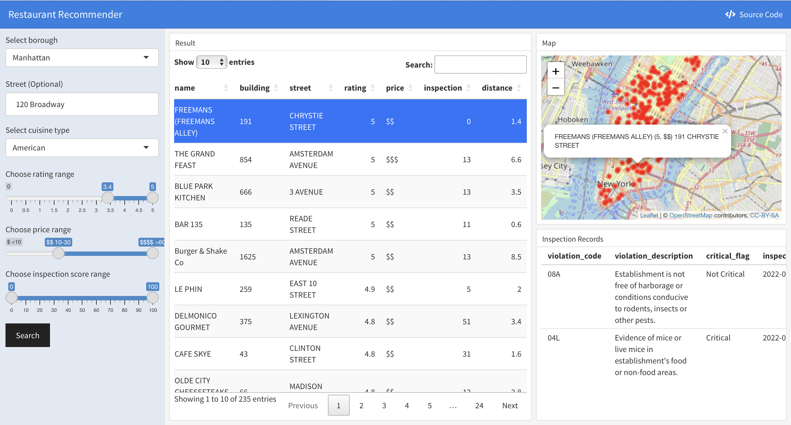

One metric consistently missing in restaurant recommendation apps is the consideration for sanitary conditions. Combining the Inspection dataset and ratings information from the most popular rating website Yelp, we provide recommendations for restaurants in NYC based on one’s choice of price range, sanitary grading, location, and cuisine type on our Shiny App. This is particularly useful for those that have higher standards for sanitary conditions. Furthermore, we provide statistical analysis on whether sanitary grades depend on which borough one is dining in, which cuisine type one chooses, and which price range the given restaurant is. This provides formal analysis that could potentially guide consumers on which types of restaurants to choose if they wish to avoid health hazards as much as possible. Finally, we fit multiple linear regression models on Yelp rating and attempt to understand which predictors to be statistically significant. The motivation on this front is to potentially provide insight for investors in the culinary industry on which measures to take (e.g., which borough should they open their restaurant, which price range should they shoot for, how much they should invest in sanitary conditions for the restaurant, etc.) if they wish to ensure the best ratings from platforms like Yelp.
What does the dataset we have at hand tell us about the restaurant industry in New York City? For example, what is the geographical distribution of restaurants with respect to price range, cuisine type, and grade(e.g., Washington Heights is dominated by Latin American restaurants)? Is there any pattern with respect to inspection information and cuisine types across different boroughs and price levels? (i.e., EDA)
What are the factors that influence sanitary grading? As a consumer, does their choice involving the borough of the restaurant, the price range of the restaurant, the cuisine type of their choosing have an effect on the sanitary grading of the restaurant? (i.e, Statistical Tests)
What is the relationship between reviewer’s rating of the restaurant and other variables including inspection score, boroughs, price range, review numbers, cuisine type? If an investor wishes to open a new restaurant and maximize review score on Yelp, which factors should he consider and which areas should he focus on investing in? (e.g., Multiple Linear Regression)
How reliable is the Yelp rating data that we have extracted? There exists a significant positive correlation between review numbers and rating, suggesting that the higher the number of reviews that a restaurant has, the higher its rating tends to be. This creates a potential for some to invest in In this way, how much does bots or paid reviewers influence this outcome of rating? How reliable should a restaurant owner or a consumer depend on this rating to assess the quality of the restaurant?
How credible is the price variable? The initial “price” variable must had been a numerical variable that is the median/mean spending of an individual in the particular restaurant. However, because of the nature of our data, this variable has been categorized to the levels of 1, 2, 3, 4, though with specific range associated with each. In this way, a restaurant that has a median individual spending of $100 would appear the same as one that has a median individual spending of $1000. How much confounding would this create for it as an independent predictor variable?
We used two data sets to complete our analysis.
This dataset provided by Department of Health and Mental Hygiene (DOHMH) contains detailed information on restaurant inspection results. We downloaded and imported the version updated on Nov. 17th. Since this file is too large to be uploaded on Github, we configured Github Large File System to store it and its cleaning results.
In the process of data cleaning, we formatted variables, identified illegal values and dropped NAs. The distinct restaurants are filtered to be our targets.
After cleaning, we are mainly focus on variables shown below:
score: Total score for a particular inspection. The
higher the score, the lower the performance and riskier the health
hazards.
grade: Grade associated with the inspection. The
lower the score, the higher (alphabetically) the grade.
violation_description: Violation description
associated with the inspection.
critical_flag: Indicator of critical
violation.
After selecting the first 8000 distinct restaurant with latest inspection records, we extracted their name and location information to generate Yelp searching URLs, and used the corresponding CSS tags to pull real-time information for each restaurant, which includes:
name: Restaurant’s name.
rating: Overall rating score given by Yelp
users.
review_num: Number of reviews for a specific
restaurant.
price: Average consuming price range for a specific
restaurant.
distance: Distance between target location and
searching result.
Finally, due to the instability of the website display, we got 6943 restaurants’ yelp information in total and kept 6053 entries which were joined with the inspection dataset for subsequent analysis.
For our exploratory analyses, we aimed to identify patterns related to inspection information and cuisine types across different boroughs and price levels. Meanwhile, the latent associations between sanitary grading, inspection-related variables, review numbers, and rating are our particular interests. The exploratory analyses consisted of two main parts: visualization and mapping of cuisine types and ratings in different boroughs and at price levels, and visualization and mapping of critical inspection information.
Based on our data frame, we get the top 10 popular cuisine types in
NYC and in different boroughs across NYC. American,
Chinese are always among people’s favorites, while citizens
in different boroughs shows their different preferences. Then, we
visualized the pattern of the top 10 frequent cuisine at different
price, which can be useful when considering the preferences at different
levels of consumption. After that, restaurants at different price levels
by borough are inspected, and it showed that people living in Manhattan
were associated with higher consumption level.
We then discovered the association between review number and review scores. Living in a era full of bots and artificial intelligence, it’s interesting to have some inspection on them. We found that for restaurants which got raring scores lower than 3, the review numbers tended to be very small. Meanwhile, the review scores by price levels were visualized. At last, we mapped the geolocation of restaurants by price and cuisine types. In general, Manhattan has the largest number of restaurants and a much denser distribution compared to other boroughs. The proportion of the least and second least expensive restaurants are much higher compared to the proportions of more expensive dining places in Bronx, Queens, Brooklyn, and Staten Island. In addition, the majority of the restaurants that fall into the most expensive category are located in Manhattan.
As demonstrated by a map, we explored the underlying distribution of
restaurants in NYC with respect to price and borough. In general,
Manhattan had the largest number of restaurants and a much denser
distribution compared to other boroughs. The proportion of the least and
second least expensive restaurants were much higher compared to the
proportions of more expensive dining places in Bronx, Queens, Brooklyn,
and Staten Island. In addition, the majority of the restaurants that
fell into the most expensive category ($$$$) were located
in Manhattan.
There were a total of 169 distinct types of violations documented for NYC restaurants, and one restaurant might have fallen into more than one category. After grouping the data by the types of violation, we identified the 10 most frequent violations to gain an understanding of the general problems faced by the restaurants.
Depending on the seriousness of the violations, Health Code violations are categorized as “critical” or “general (not critical)”. Hence, we also calculated the proportions of violations made by each that was categorized as “critical”. We found that more than 50 percent of the violations were not critical. In addition, the ratio of critical to non-critical violations was approximately the same across different boroughs of NYC.
We then generated a density heat map to identify an underlying pattern of the distribution of critical flags. According to the density heat map, restaurants with critical violations were more frequently found in some of the busier area of each borough: for instance, Soho and West Village in lower Manhattan, Korean Town in middle Manhattan, Williamsburg in Brooklyn, Jackson Heights and Main Street in Queens, etc.
In terms of the performance during inspection, the majority of the restaurants in NYC received an “A” as the inspection grade, either during the initial inspection or re-inspection. Among all boroughs in NYC, Bronx was the one with the highest proportion of restaurants receiving a grade “C”. Staten Island had the highest proportion of restaurants with grade “A” and no restaurant with grade “C”, followed by Manhattan which had the second highest proportion of grade “A” restaurants.
In this section, we conducted formal statistical tests and constructed multiple lienar regression model to analyze the data at hand. Specifically, to understand the effects of categorical variables like price range, borough, and cuisine type on inspection grades, we conducted chi-square tests and proportion tests. Moreover, to find adequate predictors for Yelp Rating, we fitted several MLR models using variable model selection techniques and compared their efficacy by performing cross-validation.
In the first part of our statistical analysis, we focused on investigating the factors that influence inspection grades. Specifically, we performed Chi-Square tests on inspection grades against borough and price range, and the results inform us that while the inspection grades significantly differ among different groups of borough at \(\alpha = 0.05\), inspection grades do not differ significantly among restaurants with different price range. On the other hand, since receiving an “A” grade is a valid metric for whether the restaurant satisfies high sanitary standards in New York City, we performed proportion test on whether the percentage of restaurants receiving an “A” in inspection grades differ by price range. The result, which runs a bit counterintuitive compared to our previous result, indicates that there is a statistically significant difference in proportion of restaurants receiving “A”s among different price ranges. In other words, when a consumer intends on choosing the restaurant of the best sanitary conditions, the price range of the particular restaurant matter to this choice; though there might not be an overall difference when considering all different inspection grades. Finally, we did proportion tests for each cuisine type that has at least ten restaurants included in our dataset, and concluded that the restaurants that are most likely to have the highest inspection grades are delicatessen(soups/salads/sandwich), followed by donuts, salads, and vegan.
The second part of formal statistical analysis involves building a regression model that predicts rating. In particular, we attempt to answer the second question raised for statistical analysis: if an investor is looking to open a new restaurant in New York City, what factors should he invest in the most? Since the response variable, rating, is negatively skewed, we performed a square transform on the data to normalize it. We fitted three models in total, the first by conducting preliminary analysis on the effect of individual predictors on the response variable the interaction between independent variables; the second by using the criterion-based method for model prediction, and the third by using backward selection. We then performed cross-validation on these three models to compare their efficacy. In conclusion, the first model provides the least RMSE and is regarded as the optimal of three. In particular, this model predicts that price range, borough, the number of reviews, the percentage of critical flags received by the restaurant out of all violations, and the interaction between review number and price range are all statistically significant predictors of rating. One particular point to note is in all our attempts to fit score as an independent variable and also from our correlation analysis, it could not be shown to be a statistically significant predictor for sq_rating. Therefore, if I were a restaurant owner, I would invest in such criterions as price range, borough, number of Yelp reviews(maybe to hire bots) so as to maximize my Yelp review rating, and incidentally, wealth; than to pay any attention on improving my sanitary condition.
We developed and deployed an Shiny App for users to get appropriate and interactive recommendations based on their personalized input. The interactive app gives user the freedom whether to input a target street. When a text input of street is received, it will be converted to a longitude and latitude coordinate using API provided by NYC GeoSearch, and the distance between each resulting restaurant and the target location will be calculated and displayed in the resulting table.
Once clicking the “Search” button, users can view key information for each restaurant satisfying their demands from the resulting table and see the location distribution on the map. While the table is sorted by rating values by default, it can be sorted by each variables based on users’ preference. By clicking a specific entry of the table, the latest inspection records of the corresponding restaurant will be shown in the lower right.

There are quite a few improvements possible for our study. In particular, upon constructing our regression model, model diagnostics analysis indicate that our model has violated the assumptions of linearity, equal variance, and have several outliers. Our natural next step would be to research other forms of modeling that might overcome these violations. Furthermore, as stated formerly, our Shiny App, though extremely versatile and practical, don’t have access to real-time dataset to update daily as do the NYC Inspection Data or the Yelp Website. Therefore, the logical next step will be for us to incorporate the updating nature and produce an app that provides recommendation using the most recent data.s